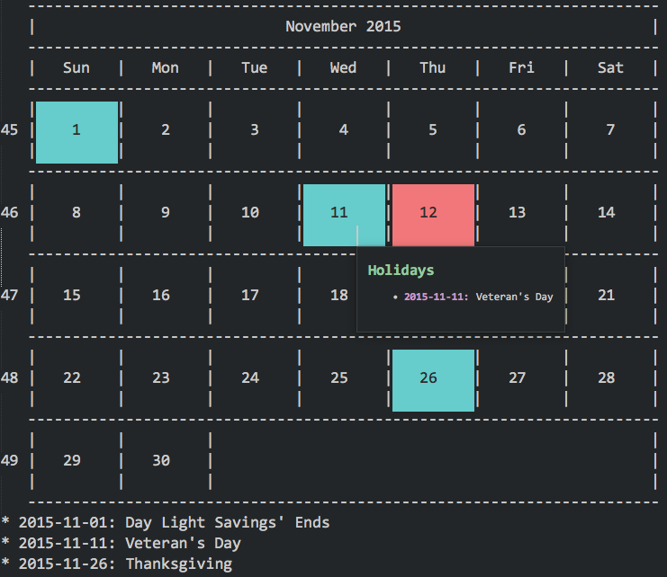

User Guide
General Use

QuickCal can be run from the command palette to show the current month, or navigate through future or past months. QuickCal can be even be configured to show holidays. If you have Sublime Text build 3080+, QuickCal can also show holiday tooltips that outline all of the holidays for the selected day (in version of Sublime 3124+, tooltip appears on hover instead).
Commands
Calendar can be opened via commands from the command palette. Once a calendar is shown, you can use the left and right arrow to navigate the months of the year.
CalendarCommand
Shows today's date in the calendar (month view only)
CalendarLookupCommand
Shows an input panel allowing the user to define what day they would like to see in the calendar. Input is entered as month/day/year, where month, day, and year are numerical values. Any non number delimiter can be used, so things like 3-2-2013 is also acceptable.
CalendarMonthNavCommand
CalendarMonthNavCommand is a command that can only be run in a calendar view. It allows you to navigate to the next or previous month. It takes a directional option called reverse. If reverse is set to true, the command will navigate to the previous month.
Settings
These are the available settings at the current time:
locale
When in online mode, holidays are downloaded from holidata.net. Holidata.net provides holidays for a number of different locales. You can see which are available by checking here. Simply enter your locale in the locale setting to retrieve the appropriate locale. Holidays from holidata.net are limited to about one year in advance of the current and go back as far as 2011.
{ // Locale for holidays, this is what will get pulled down from holidata.net // Please check http://holidata.net/locale_index.html to see available locale "locale": "en-US",
region
Some locales will have sub regions that have different holidays. For instance, the United States has many states, and some states have holidays that are specific to a state. To view what regions are available for your locale, you can look in one of the JSON files located here. If you do not want region specific holidays, you can leave this blank.
// Sub region of locale. For example, in the US, a sub region would be a state // such as Florida (FL). If you have doubts about what to use, you can look in // one of the JSON files at http://holidata.net/locale_index.html to see what // regions are referenced in you locale file. "region": "",
sunday_first
If you would like to view your calendar starting with Sunday as the first day, you can enable sunday_first. Simply disable it to have Monday as the first day.
// Start with Sunday first when displaying calendar "sunday_first": true,
hide_holiday_footer
Hides the holiday list that appears under the calendar.
// Hide the holiday list under the calendar. "hide_holiday_footer": false,
highlight_special_interest_days
Creates highlight regions around holidays and special interest days (like current day). This is useful if your color scheme does not natively highlight the calendar scopes.
// If your theme does not support coloring the calendar boxes, // this will highlight the day numbers. "highlight_special_interest_days": true,
holiday_scope
Highlight holidays with the same color as the given scope.
// Highlight holidays with the same color as the given scope. "holiday_scope": "constant.numeric",
selected_scope
Highlight selected day (current day etc.) with the same color as the given scope.
// Highlight selected day (current day etc.) with the same color as the given scope. "selected_scope": "keyword.operator",
offline_holidays
If you are behind a firewall or simply prefer the selection provided by the internal holiday generator, you can enable offline_holidays. With offline_holidays, holidays will be generated via an internal library. Currently, the internal generator contains lists that are mainly for the US, as the author is from the US. Holiday lists for other countries and cultures are welcome via pull requests! The internal generator was provided thanks to kauinoa.
// Don't download from http://holidata.net, but instead use internal holiday generator. // Note: currently only US and a few world wide holidays are supported. "offline_holidays": false,
default_holiday_lists
The internal, offline holiday generator has a number of holiday lists available. each item in the dictionary can be individually enabled or disabled. Enable a list will enable all the holidays specified in that list.
// Default internal holiday lists "default_holiday_lists": { "christian": false, // Christian (a lot are specifically Catholic) "daylight_savings": true, // Daylight Savings "common_us": false, // Common US holidays "federal_us": true, // US federal holidays "important_us": true, // Important US holidays "state_birthdays_us": false, // State birthdays US holidays "other_us": false, // Other random holidays "world_wide": false // World wide holidays },
custom_holidays
QuickCal allows for additional custom holidays. You can add as many as you want. Only very basic holidays can be defined at this time. Holidays are defined by creating a dictionary object in the custom_holidays list. Holidays are defined in the dictionary by giving the month and the day in an array via the date key, and a unique name via the name key. Custom holidays cannot handle complex holidays: 3rd Tuesday of the month etc. It is possible that more advanced holiday support might be provided in the future.
// Add simple custom holidays. Should be an array of dictionaries. "custom_holidays": [ // Should be in the following form: // name: is a unique name for the holiday // date: is an array of two integers: [month, day] // {"name": "Bob's Birthday", "date": [2, 20]} ] }
Highlighting Current Days and Holidays
By default, most color schemes won't highlight the current day and holidays. For this reason, the highlight_special_interest_days settings was added to ensure special interest days still get highlighted. If you would like to take control of the active day and holiday highlighting and have your color scheme natively highlight these days, you can edit your color scheme. Active day calendar boxes are scoped as selected_day.calendar while holiday calendar boxes are scoped as holiday.calendar. You must update your color scheme file with something like the following to have your color scheme highlight special interest days (don't forget to disable highlight_special_interest_days):
<dict> <key>name</key> <string>Calendar Selected Day</string> <key>scope</key> <string>selected_day.calendar</string> <key>settings</key> <dict> <key>background</key> <string>#F2777A</string> <key>foreground</key> <string>#2D2D2D</string> </dict> </dict> <dict> <key>name</key> <string>Calendar Holiday</string> <key>scope</key> <string>holiday.calendar</string> <key>settings</key> <dict> <key>background</key> <string>#66CCCC</string> <key>foreground</key> <string>#2D2D2D</string> </dict> </dict>